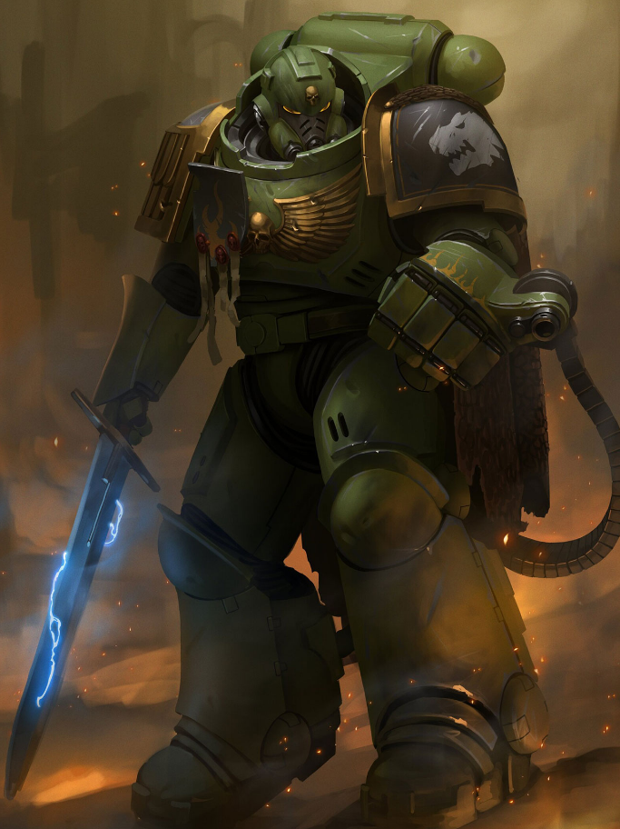

Dossier Astartes XVIIIe Légion
Les Salamanders furent la XVIIIe Légion. Une force forgée dans le feu, la patience et l’endurance.
Leur identité fut scellée sur Nocturne, monde volcanique instable, ravagé par les séismes, les cendres et les flammes.

LES PREMIERS ÂGES
Sur Nocturne, la survie exigeait plus que la force. Elle exigeait la maîtrise du feu, du métal et de soi-même.
Lorsque Vulkan prit le commandement de la légion, il transmit à ses fils une doctrine rare parmi les Astartes. La guerre devait protéger l’Humanité, non simplement écraser ses ennemis.
Les Salamanders développèrent un lien profond avec l’artisanat, les armes forgées à la main et les serments tenus jusque dans la mort.
Leur doctrine privilégie les armes thermiques, les lance-flammes, le combat rapproché et la défense des populations civiles.
L’UNITÉ PAR LE FER
Cette compassion relative les distingue. Elle ne les rend pas faibles. Elle les rend dangereux autrement.
Car un Salamander ne protège pas par douceur. Il protège par le feu.
Durant la Grande Croisade, puis l’Hérésie, la XVIIIe Légion subit des pertes terribles. Mais elle conserva son identité.
Le feu détruit. Le feu purifie. Le feu forge.
L’HÉRITAGE DU TRÔNE
Il faut comprendre ceci. Les Salamanders ne combattent pas seulement pour vaincre.
Ils combattent pour que quelque chose survive après la bataille.
Fin de l’extrait. Doctrine Salamanders classée atypique mais compatible avec les objectifs de préservation impériale.